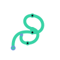

Пройденный маршрут складывается в компактный асимметричный узел — не график
результата и не иконка приложения. Один continuous trace · один central anchor · один open endpoint ·
один closed endpoint · 1–4 captured nodes · асимметричный силуэт. Без рамки-контейнера, без полного
круга, без направления графика. Ступень = число captured nodes (меняется структура узла).
Наблюдатель I
22
44
108
Наблюдатель II
22
44
108
Наблюдатель III · сейчас

22
44
108
Наблюдатель IV
22
44
108
Locked · Наблюдатель IV
Transition III → IV
Monochrome / силуэт
Контраст на светлом (тех. тест)
только технический тест, не тема продукта
Проверки: blur ✓ · 22px raster ✓ · grayscale ✓ · силуэт ✓ ·
распознаётся без цвета ✓ · не похоже на wallet/camera/scanner/QR/chart icon ✓. Если знак похож на
распространённую app icon — не проходит. Структура: узел, не рамка; ступень = число captured nodes;
IV замыкает внутренний маршрут. references provisional.